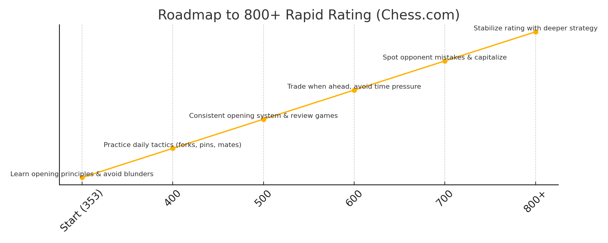

Core Strategy
- ⭐ Avoid blunders with calm, slow moves and time awareness.
- ⭐ Punish hanging pieces — stay alert for mistakes every turn.
- ⭐ Use one reliable opening setup to avoid confusion.
- ⭐ Trade when ahead to simplify and win cleanly.
Opening Setup
♘ As White (London System):


Daily Routine
- 🕛 Play 2 Rapid Games (10+0 or 15+10)
- 🔎 Review 1 game: focus on blunders and missed tactics
- ⚖️ Do 10–20 puzzles (forks, pins, mates)
Rating Roadmap
Milestones to track your progress and what to focus on at each stage:
